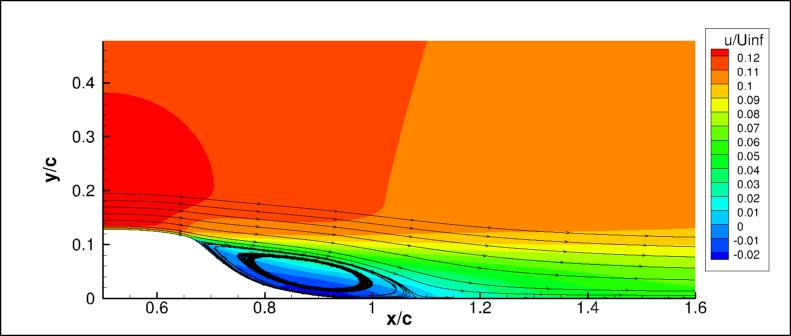

|
Langley Research CenterTurbulence Modeling Resource |
LES: Compressible 2-D NASA Wall-Mounted Hump
Return to: Data from LES - Intro Page
Return to: Turbulence Modeling Resource Home PageThe data on this page were provided by A. Uzun of NIA.
This compressible LES case is for 2-D separating flow over the NASA Wall-Mounted Hump (no flow control).
The link to the experimental data can be found by clicking here:
NASA CFDVAL2004 Workshop webpage.
The LES was run using a compressible code. The publication is:
This is a wall-resolved compressible-flow LES computation
at M=0.1. Several different variants were run. Here, 3 variants are reported. Some relevant information is given here, but the
interested reader is referred to the above paper for more details. For all runs:
The "modified" top wall shape was attempted because it was
felt that the original shape (intended to mimic the blockage effect of the end plates in the experimental configuration) may not have included the
influence of the boundary layers. The shape was increased arbitrarily by 50% to attempt to account for the possible additional flow blockage.
Long-time averaged LES data are provided below (on a grid
normalized by the hump chord).
Details regarding the NASA wall-mounted hump geometry can be found at:
Separated
Flow over Wall-mounted Hump with and without Flow Control.
The following figure is from the Retheta=5000 case:

The field data below contains LES time-averaged results, including mean flow variables density, u-velocity, v-velocity, and pressure;
and turbulence quantities uu, vv, ww, and uv.
Nondimensional mean flow and turbulence mean field data
is provided here (note that this is a gzipped
Tecplot
formatted file, so you must either have Tecplot or know how to read their format in order to use it.
See README.tecplot):
Nondimensional velocity derivatives are
provided here (note that this is a gzipped
Tecplot
formatted file, so you must either have Tecplot or know how to read their format in order to use it.
See README.velderivs.tecplot):
Surface pressure coefficients:
Surface skin friction coefficients:
Return to: Data from LES - Intro Page
Recent significant updates: Responsible NASA Official:
Ethan Vogel
The following variants are reported here:
04/03/2017 - added velocity derivative data
Page Curator:
Clark Pederson
Last Updated: 11/05/2021